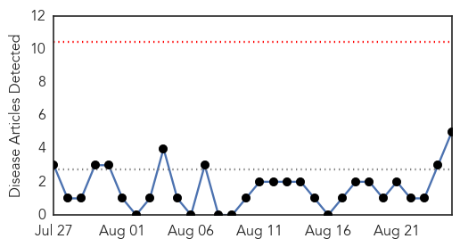
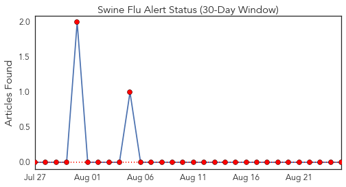
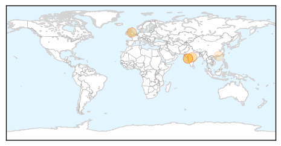
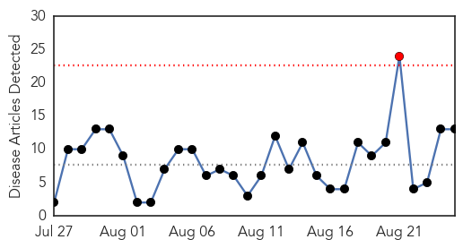
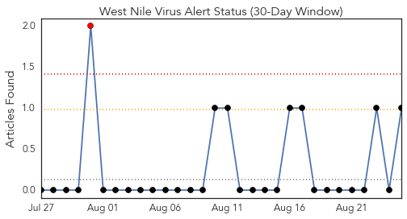
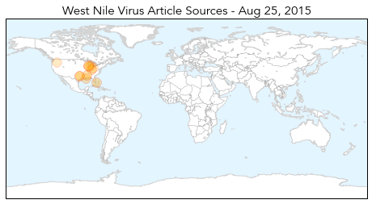

Swine Flu
30-Day Web Trend
0 alerts, 0 warnings

30-Day Twitter Trend
2 alerts, 0 warnings

Article Locations
Article Confidences
Top Articles:
Top Tweets:
-
No tweets found for Aug 25, 2015
West Nile Virus
30-Day Web Trend
1 alerts, 0 warnings

30-Day Twitter Trend
1 alerts, 0 warnings

Article Locations
Article Confidences

Top Articles:
- 0.998
- Crow in Kenosha County tests positive for West Nile Virus – West of the I
- 0.959
- New West Nile Virus Cases Confirmed in Mississippi
- 0.930
- West Nile detected in Miami Twp., Mt. Airy
- 0.918
- Dallas County reports first West Nile death
- 0.918
- West Nile virus found in Hamilton County
- 0.887
- Region spared from human cases of West Nile
- 0.878
- Jefferson Parish officials urge residents to protect themselves against mosquitoes
- 0.832
- Mosquitoes carrying West Nile found in Kent County
- 0.725
- Elderly man reported as first West Nile Virus death in Dallas - KLTV.com-Tyler, Longview, Jacksonville, Texas
- 0.717
- West Nile Patient Dies in Dallas County
- 0.714
- West Nile virus found in Nc'town, Dennison
- 0.681
- In Washington, West Nile virus makes a comeback
- 0.643
- Health department urges residents to be vigilant against mosquitos
Top Tweets:
- 0.536
- Flavivirus news: North Shore Health Department: Dead crow tests positive for West Nile virus - ... http://t.co/iy55SP5d24 pathogenposse